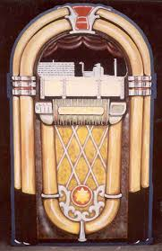

Jackie Daniels's
Jivin' Jukebox
Featuring Hits from the Swing Era
Up-Tempo
For Lindy Hop, Foxtrot, and Other Kinds of Rug-Cutting
Let's Dance
Benny Goodman and His Orchestra
Begin the Beguine
Artie Shaw and His Orchestra
Pennsylvania 6-5000
Glenn Miller and His Orchestra
Take the A-Train
Duke Ellington and His Orchestra

Ballads
For Slow, Sentimental, Romantic Dancing
Moonlight Serenade
Glenn Miller and His Orchestra
Stardust
Artie Shaw and His Orchestra
I'll Never Smile Again
Artie Shaw, Frank Sinatra, and the Pied Pipers
White Christmas
Bing Crosby
Let Jackie decide!
Last
Rewind
Pause
Stop
Skip
Instructions
Click on the song you want to hear to play it.
While the song is playing, click the play key to pause. While paused, click it to resume. This is like dropping and lifting the needle.
Click the right arrow key (->) to skip to the next tune. Click the left arrow key (<-) to skip to the previous one.
You can click outside to...
If you want to choose a song at random, click the button that will let ol' Jackie decide. He'd be more than happy to do so!
So, without further ado, ladies and gentlemen,
LET'S DANCE!!!